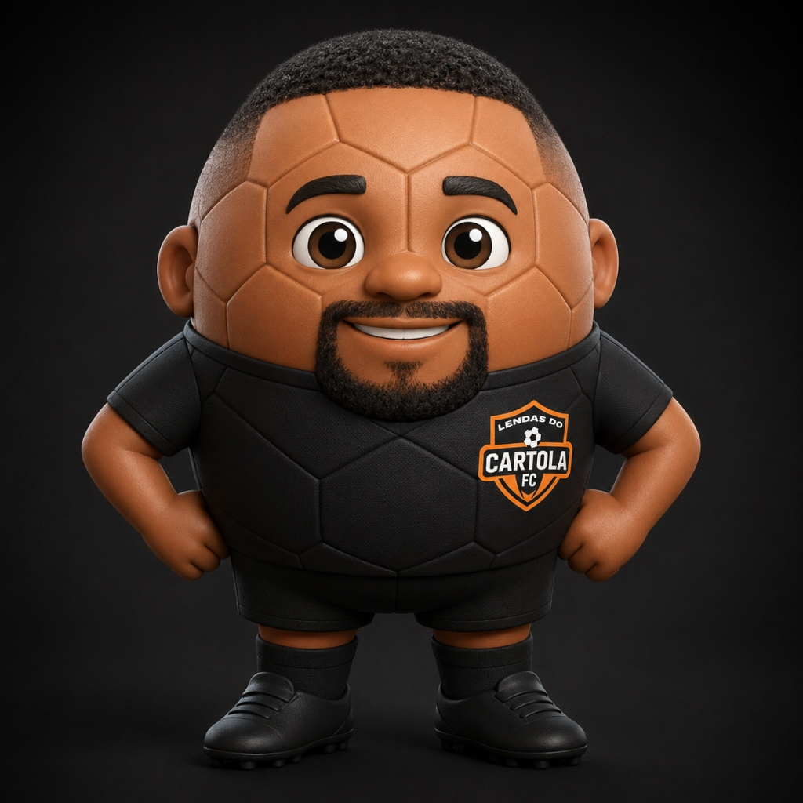

Lendas Cartola Sync
ATIVO
Conta Globo (Cartola):
Conectado
Time Identificado:
G4 do Cartola FC
Servidor Local:
Online (8080)
⚠️
Servidor desligado:
Dê 2 cliques no arquivo
INICIAR_CARTOLA.bat
para ligar a plataforma.
🚀 Abrir Plataforma Lendas
🌐 Abrir Site Oficial do Cartola